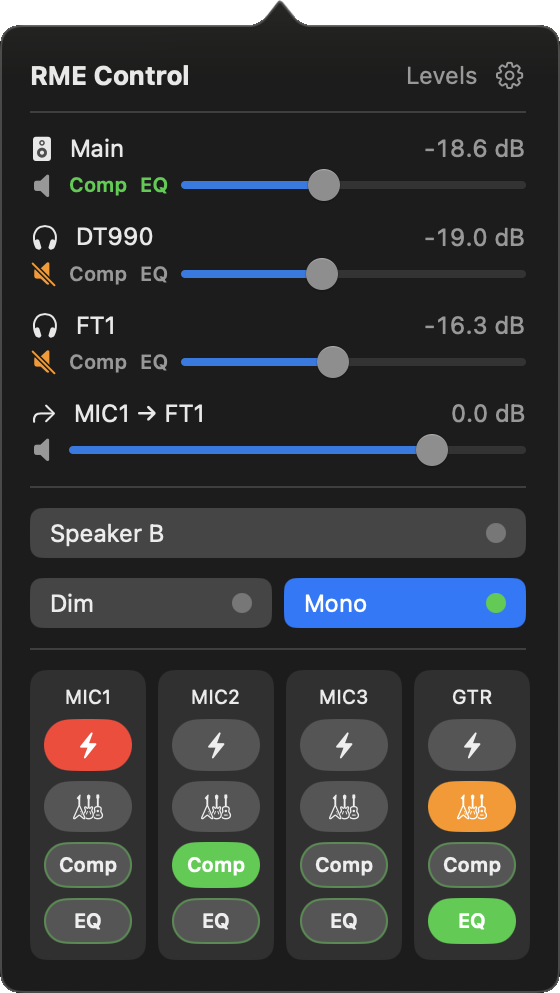
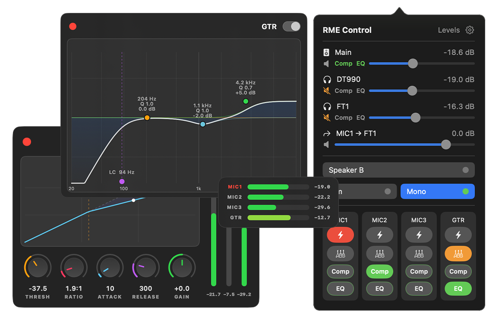
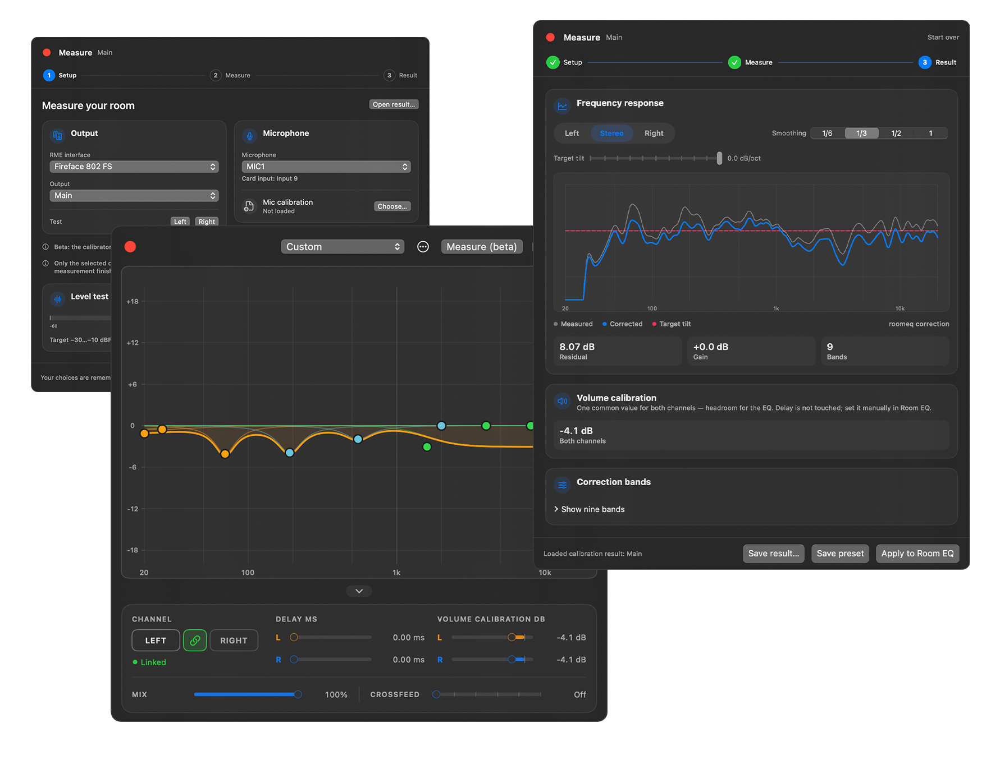

Outputs
Volume, switching and processing
Adjust the volume and switch between outputs from the Mac keyboard, toggle Mute, Dim and Mono, and reach the compressor and 3-band EQ on output channels.
Free, open-source control for TotalMix FX: volume and output switching, Room EQ and calibration, headphone presets — from the menu bar.
Global OSC, TotalMix 2.1 or newer. macOS 14+, Apple Silicon and Intel.

Features
RME Control is a free, open-source macOS utility that controls the TotalMix FX mixer for RME audio interfaces straight from the Mac menu bar. It saves you from opening the main app window for everyday settings.
Outputs
Adjust the volume and switch between outputs from the Mac keyboard, toggle Mute, Dim and Mono, and reach the compressor and 3-band EQ on output channels.
Room EQ
A full port of Room EQ from TotalMix for every output, with delay and Crossfeed, plus a room calibration wizard that supports measurement microphone calibration files.
Headphones
A built-in library of EQ curves for 80 headphone models across 25 popular brands.
Inputs
Quick access to +48V phantom power, Instrument mode (Inst), EQ and compressor on input channels.
More
Always-on-top level meters, custom presets, customizable keyboard shortcuts and web-based remote control from a phone browser.
Version 4.1
Measure
Measure is now a separate module: install it from Settings → Modules, remove it to free 82 MB. The app itself is 14 MB.
Presets
Presets capture channels, equalizers, dynamics, Room EQ, faders and Control Room buttons — and restore all of it. Export to a file, import on another Mac.
Interface
A denser frequency axis with ticks, live readings under the cursor, a compressor/expander switch, and Room EQ redraws about five times faster.
Dynamics
Dynamics switches between compressor and expander, with the matching curve and TotalMix's own expander parameters.
Measure 1.1
Clear error handling, a smoother measurement flow and an algorithm aligned with the engine author's recommendations.
Screens


Download RME-Control-4.1.pkg and open it.
Not notarized: allow it once under Privacy and Security. The installer clears the quarantine flag.
If macOS still refuses to open it, take the app out of quarantine:
xattr -dr com.apple.quarantine \ "/Applications/RME Control.app"
Grant Accessibility in the same pane so the volume keys reach TotalMix.
TotalMix
The app speaks Global OSC. In TotalMix FX 2.1 or newer:
Set the OSC host to 127.0.0.1 and the ports to 7001 and 9001.
Open Options → Mixer Settings → OSC and set Compatibility (Mode) to Global OSC.
Turn on Send Status.
Turn on Send level data.
Turn on Peak hold.
Turn on Send all data on start.
Then open Settings → Connection in RME Control and use the same ports.
Specs